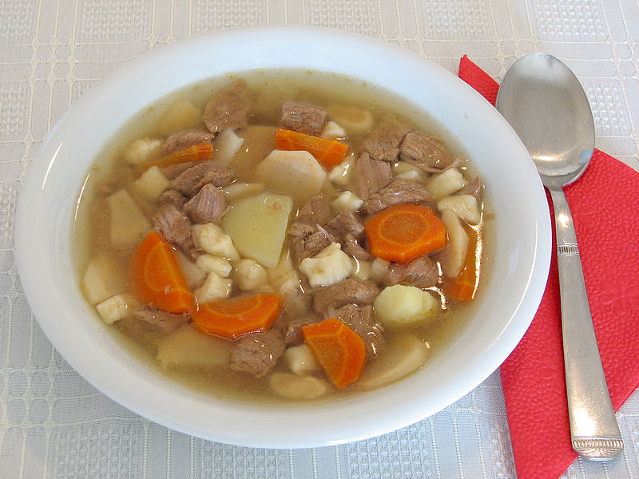

SOPAS

¿que es la sopa?
Una sopa es una preparación culinaria que consiste en un líquido con sustancia y sabor.
Ocasionalmente se mezcla la sopa con pipa. En algunos casos posee ingredientes sólidos de pequeño tamaño sumergidos en su volumen.
Una de sus características principales es que se ingiere con cuchara. Si no tuviera ingredientes sólidos (vegetales o productos cárnicos)
se considera un caldo alimenticio, base de todas las sopas. Si se clarifica será un consomé. La sopa suele proceder de una preparación
culinaria con evaporación, como es el cocido, o mediante retención de vapores: estofado. Tradicionalmente, se puede espesar añadiendo al
final de la cocción pan o cereales como el arroz, fideos o pasta menuda.
Se suele servir generalmente al inicio de cada comida. La primera clasificación suele hacerse en función de la temperatura de servir,
es decir en sopas frías, o sopas calientes.
Recetas de sopa
sopa de langosta costa brava
Dificultad: Alta -- Plato de la cocina tradicional catalana, originario de Gerona. Es un plato casero y una manera que se tenía en los
pueblos de la Costa Brava de economizar, pues con una langosta se hacían dos platos: 1º la sopa y de 2º se comían la cola de langosta con una salsa fría.
ingredientes
1 langosta de 1 Kgrs.
3 cebolla.
1 rama de apio.
2 ramitas de perejil.
15 granos de pimienta
2 hojas de laurel.
6 cucharas de tomate frito.
1 vasito de absenta.
aceite de oliva
sal y pimienta.
1 clavo.
3 dientes de ajos.
6 rebanadas de pan frito.
1 cucharadita de tomillo.
1 cucharadita de orégano.
1 pellizco de azafrán.
1 cucharadita maicena (opcional)
como hacerlo
Paso 1: A la langosta se le ata la cola.
Paso 2: Se coloca en una cazuela grande y honda con agua, sal, 1 cebolla cortada a trozos, 1 rama de apio, el perejil, los granos de pimienta,
el tomillo, el orégano, el laurel y se deja hervir todo junto por espacio de 15 min.
Paso 3: Se añade la langosta y tiene que hervir 15 minutos.
Paso 4: Se saca la langosta, se enfría bajo el chorro de agua y cuando ya esté fría se separa la cola. Se le quita la cascara y se reserva la cola.
Se separan las patas, se parte la casacara y se reserva la carne, la cual se corta a trocitos y se reserva en otro platito.
Paso 5: Todas las visceras y lo que hay en el interior, se pone en el mortero y se machaca bien, se diluye en un poco del caldo y se cuela
con un cedazo y se reserva.
Paso 6: En una sartén, se echa el aceite y se sofríen las dos cebollas restantes trinchadas ,el ajo también trinchadito, el clavo y un poquito
de pimienta, a fuego lento.
Paso 7: Cuando el sofrito ya casi esté, se le añade las visceras machacadas, la carcasa y la cascara de las patas y se le añade por encima el resto
del caldo.
Paso 8: Le añadiremos el tomate frito, un vasito de absenta, un pellizco de azafrán. Y lo dejamos hervir un rato.
Paso 9: Cuando la sopa ya casi esté (35 ò 40 min.), se retiran las cáscaras y se le añaden las patas que habíamos reservado.
Si es necesario espesar la sopa (esto depende de como le guste a cada uno), se puede hacer con un poco de maicena.
Paso 10: Mientras se termina de hacer la sopa se cortan las rebanadas de pan en dados y se fríen.
Paso 11: Se pone la sopa en una sopera y el pan frito a parte, para que cada uno se ponga los tropezones, que quiera.
Paso 12: La cola de la langosta se corta a rodajas finas y se sirve fría con una salsa: mayonesa.
sopa de almendras
Receta típica navideña de la cocina lenvantina. 
ingrdientes
*Para un litro y medio de leche:
*1/4 kilo de almendras molidas
*una rama de canela
*corteza de un limón
*lengüetas de bizcocho,
como hacerlo
Paso 1: Se hierve la leche con la canela y la corteza de limon, varias horas antes para que la leche quede bien perfumada.
Paso 2: Cuando se va a servir se calienta, sacando el limón y la canela y se le añade la almendra molida. Si gusta mas espesa, se le puede añadir mas almendra.
Paso 3. Por último se colocan encima las soletillas o bizcochos y si gusta se le puede añadir un polvillo de canela.
sopa de manzana

ingredientes
Pulpa de manzana
Mantequilla sin sal
Crema agria
Pimienta y sal
como hacerlo
1. Se ponen todos los ingredientes en la licuadora para mezclarlos , y se le agrega un poco de caldo de pollo.
2. Se pone a sazonar en un sartén, de 5 a 10 min. Aproximadamente.
3. Mientras tanto se parte una manzana de tal forma que quede como recipiente para la sopa, por lo que se le debe quitar el relleno.
4. Una vez sazonada la sopa, se vacía dentro de la manzana y se tapa con la parte que se cortó.